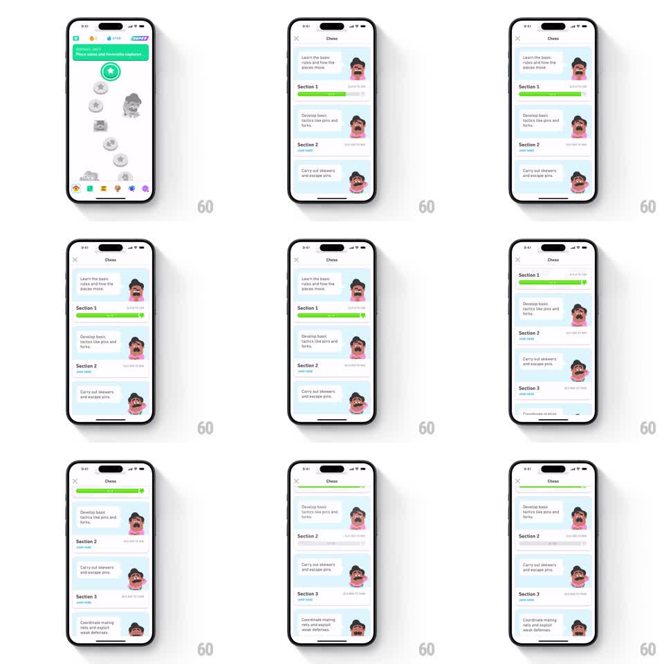

Media
Frame-by-frame

Rebuild this interaction 1:1: Duolingo Chess's course screen sticky completion - scrolling the section list morphs Section 1's completed green progress bar into a compact progress line pinned under the top navigation header, while section cards flow beneath it.

Rebuild this interaction 1:1: Duolingo Chess's course screen sticky completion - scrolling the section list morphs Section 1's completed green progress bar into a compact progress line pinned under the top navigation header, while section cards flow beneath it.
## Integration
Integration: stack-agnostic spec - springs given as stiffness/damping, timed motions as duration + curve; map every value to your framework and animation library of choice.
## Scene
White "Chess" course screen. Header: close X, centered "Chess" title. Body: a vertical list of section cards - Section 1 ("Learn the basic rules and how the pieces move") with a green progress bar showing completion and coach avatar, Section 2 ("Develop basic tactics like pins and forks"), Section 3 ("Carry out skewers and escape pins"), each with its own progress bar and avatar. The path screen flashes a green "SECTION COMPLETE" banner before this screen.
## Motion spec
Pattern: scroll-linked sticky header morph.
- At rest (top of scroll): Section 1's card shows its full green progress bar inline, fill animating to 100% over 500ms (ease-out) with a check chip popping at the end (scale 0 -> 1.1 -> 1.0, 180ms).
- On scroll up: the Section 1 card scrolls away, and its progress bar detaches - it shrinks in height (~12pt -> ~4pt) and pins itself under the navigation header as a thin green line (scroll-linked, continuous).
- The pinned bar stays visible as sections 2 and 3 scroll beneath it; header title remains static.
- Scrolling back to top reverses the morph: the thin bar reattaches and expands into Section 1's card.
- Section cards themselves scroll at 1:1 with no extra motion.
## Calibration
- The morph is scroll-mapped, not threshold-triggered - mid-scroll shows a mid-state bar.
- The pinned line must read as the same element (same green, same fill proportion) - a continuity trick, not a new bar.
## Reduced motion
The progress bar completes with a 300ms fill; scrolling shows a static thin progress line under the header, crossfaded in over 150ms.
## Don't miss
- The header gains a hairline shadow only while the bar is pinned (scroll depth cue).
- Only Section 1 (the completed one) morphs; incomplete sections' bars never pin.